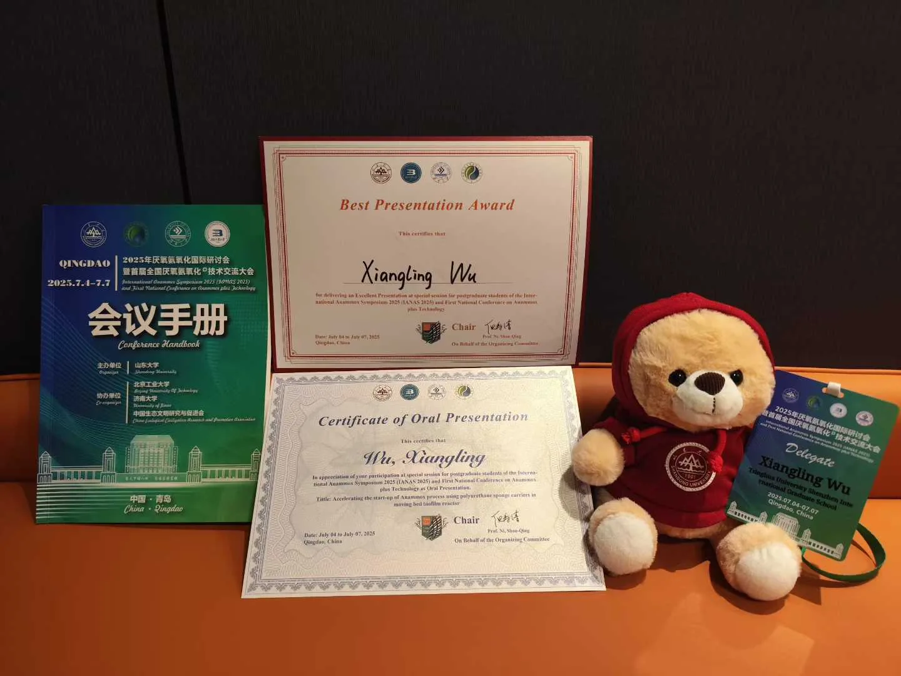

清华SIGS科研专题：将餐厨垃圾转化为低碳污水处理“优质口粮”
清华SIGS专题报道了我在低碳污水处理与固废资源化交叉领域的研究，呈现从理论机制到深圳污水处理厂规模化应用的完整路径。
清华SIGS环境与生态研究院
阅读原文 ↗精选记录科研报道、荣誉、学术表达与个人写作。
清华SIGS专题报道了我在低碳污水处理与固废资源化交叉领域的研究，呈现从理论机制到深圳污水处理厂规模化应用的完整路径。
清华SIGS报道林琳副教授团队的科研转化成果：餐厨垃圾协同脱氮技术落地后，示范项目碳源使用量同比下降85%，除磷剂下降93%。

在青岛举行的2025年厌氧氨氧化国际研讨会暨首届全国厌氧氨氧化技术交流大会上，围绕低碳脱氮研究作口头汇报并获“最佳汇报奖”。